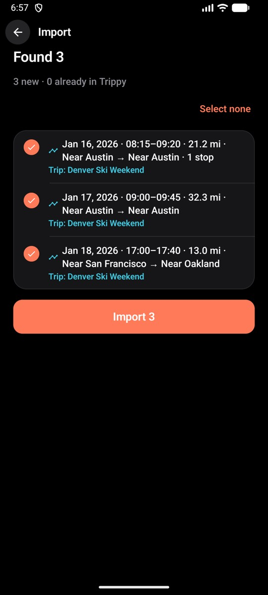
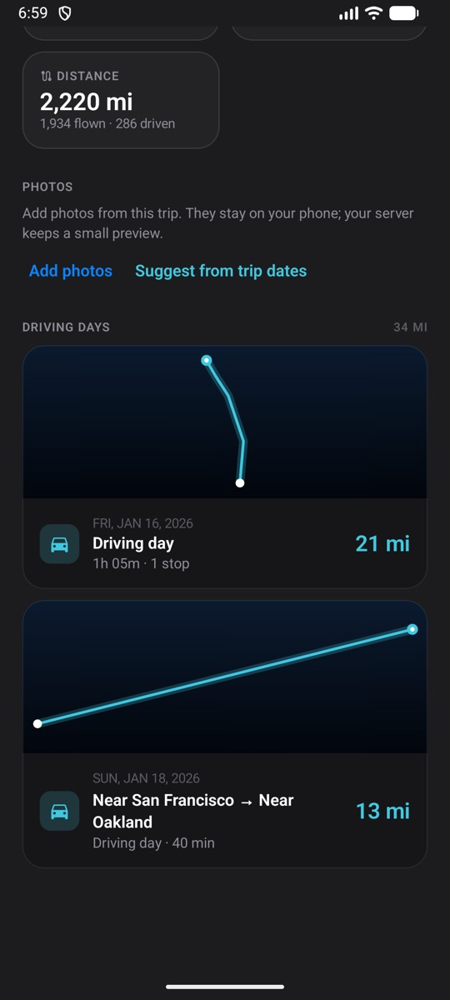
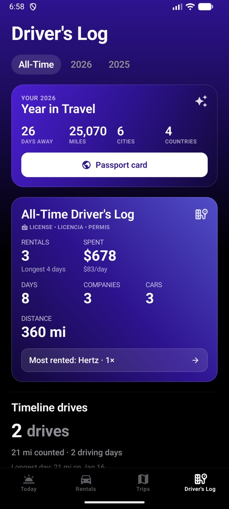
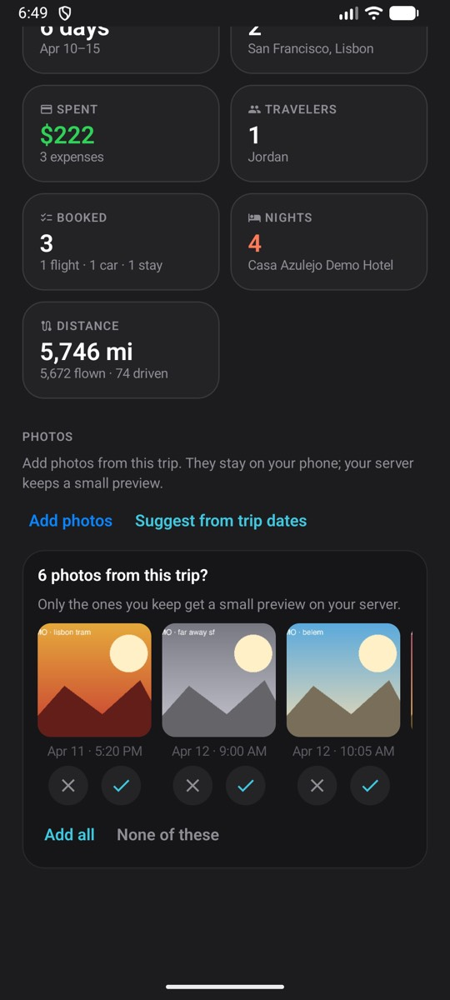
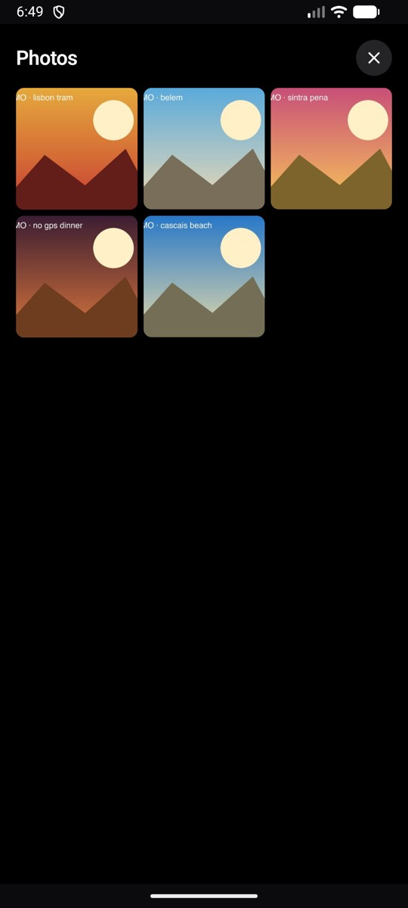
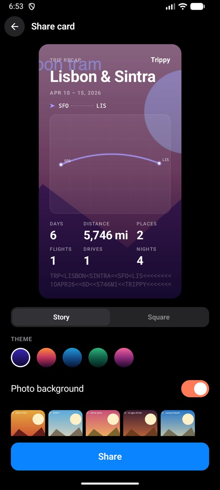
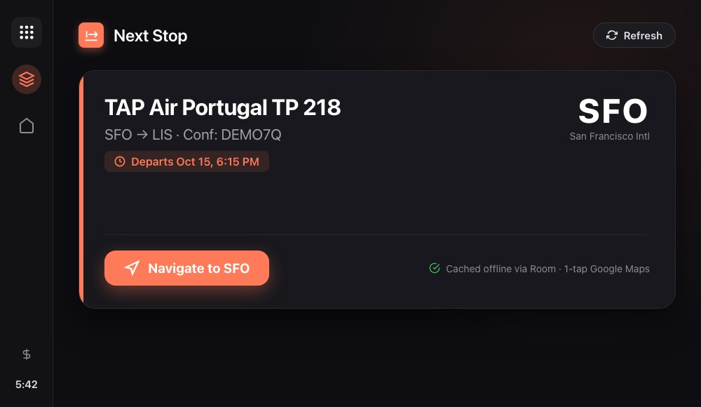

Free & open source · iOS & Android + your server
Every trip.
One beautiful timeline.
Your travels, beautifully tracked. Self-hosted.
Flights, stays, rental cars, journeys and shared expenses in native iOS and Android apps, backed by a small server you run yourself. No Trippy cloud. No ads. No telemetry.
Features
Everything about a trip, in one place.
Flights
Lookup prefill, terminal, gate, notes, seats and route on a map, with full edit and delete.
Stays
Hotels and rentals with check-in, check-out, nights and cost.
Rental cars
Pickup, return, mileage and cost, collected in a Driver's Log.
Journeys
Link several trips, like Lisbon → Madrid, into one route and map.
Split expenses
Add travelers, split equally, by amount, percentage or shares, and settle up.
Stories & share cards
Trip stories, a year-in-travel recap and cards you can save as images.
Android Auto
Next flight, hotel or rental with departure time and 1-tap Google Maps navigation right from your car display.
Offline & search
Fast offline caching with 3s connect timeout. Search across trips, flights and stays.
Email-in optional
Forward a confirmation and Trippy files it. How import works →
Live status optional
Bring your own AeroDataBox, Aviationstack or FlightAware AeroAPI key.
Self-host
One command with Docker Compose. Widgets, invites and a 30-day Recently Deleted included.
Screenshots
Designed for the way you travel.
Swipe, use the arrows, or pick a dot. All screens use made-up demo data.
Import
How bookings reach the app.
Hover or tap a path. Files are previewed on your server, then filed on a trip.
Import flow: you bring a Flighty CSV, Wallet pass, calendar, email, any CSV, typed entry or Google Maps Timeline. The server reads flights, stays, rentals and drives. The app shows live status, itinerary, maps and the Driver's Log. Tab to a box or ribbon, then press Enter to pin that path.
Swipe the chart to follow a path
Preview → review → add
Pick a source
Profile → Import. Preview first, then add. Duplicates are skipped.
Parser notes in IMPORTERS.md. Email-in setup in SELF_HOSTING.md.
Drives
Your drives, from Google Maps.
Export Timeline on your phone, import the file, and review a preview. Drives attach to trips and journeys and add miles to the Driver's Log. One file import from the phone's Timeline export.
-

Preview, then add
-

On the trip map
-

Driver's Log
Photos
Trip photos stay on the phone.
Trippy suggests photos by date and place. Full images stay on the device; only a small thumbnail reaches your own server.
-

Suggested by date
-

On the trip
-

Share a still
Android & Android Auto
The same trips, on Android and in the car.
Built with Jetpack Compose and Material 3, with fast offline caching (3s connect timeout) and query-preserving search. In your car, Trippy for Android Auto puts your upcoming flight, hotel, or rental on the dashboard with departure times and 1-tap Google Maps navigation.
Self-host it
Your box, your database.
A small FastAPI server and SQLite. Docker Compose, or the five-minute steps below. Setup notes live in the repo README.

Android Auto · Next Stop screen with offline Room cache · 1-tap navigation in Google Maps
Why self-host
Your trips are personal.
Keep them that way.
Booking confirmations, travel documents, where you sleep and who you travel with. Trippy keeps all of it on a machine you control.
- Your server, your data. A SQLite database on your own box. Back it up, move it, or delete it.
- No Trippy cloud. No vendor account, no ads, no tracking, no telemetry.
- Private by default. Runs on localhost or your LAN; reach it from your phone over Tailscale or your own HTTPS.
- Bring your own keys. Live flight status and email-in are optional and use providers you choose.
- Open source, MIT. Read every line, fork it, change it.
Self-host
Up and running in about five minutes.
1 Start the server
Needs Docker with Compose v2. install.sh writes a .env with a random signing key, then runs docker compose up -d --build.
git clone https://github.com/sakethramanujam/trippy.git
cd trippy
./install.sh
curl http://127.0.0.1:8000/health2 Build the iOS app
There is no App Store release. Install on iPhone with Xcode (iOS 17+) and XcodeGen, or grab the Android build.
brew install xcodegen
cp ios-xcode/Local.xcconfig.example ios-xcode/Local.xcconfig
xcodegen generate
open Trippy.xcodeproj3 Point it at your server
Pick your server on the sign-in screen. To reach it away from home, use LAN, Tailscale, Caddy or Cloudflare Tunnel — see SELF_HOSTING.md.
- Swift
- SwiftUI
- MapKit
- WidgetKit
- Kotlin
- Jetpack Compose
- Android Auto
- Room
- Python
- FastAPI
- SQLAlchemy
- SQLite
- Alembic
- Docker
- XcodeGen